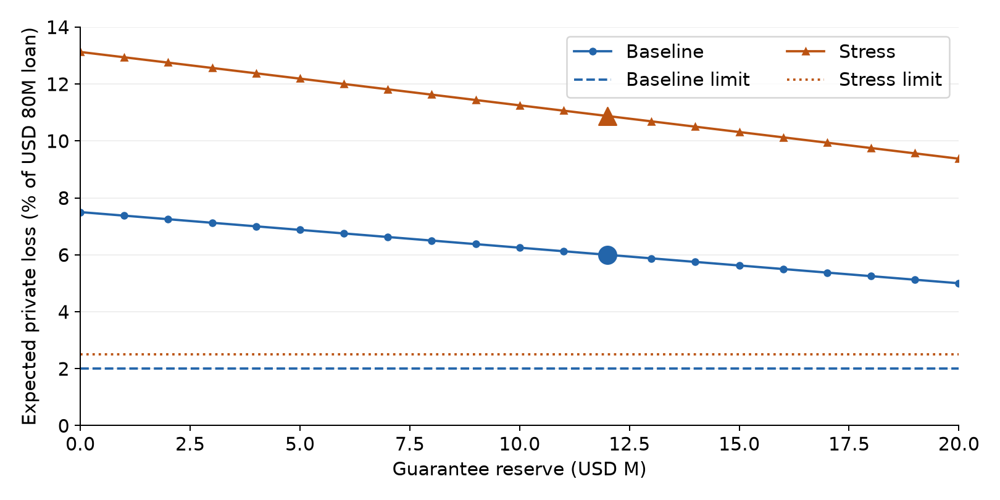
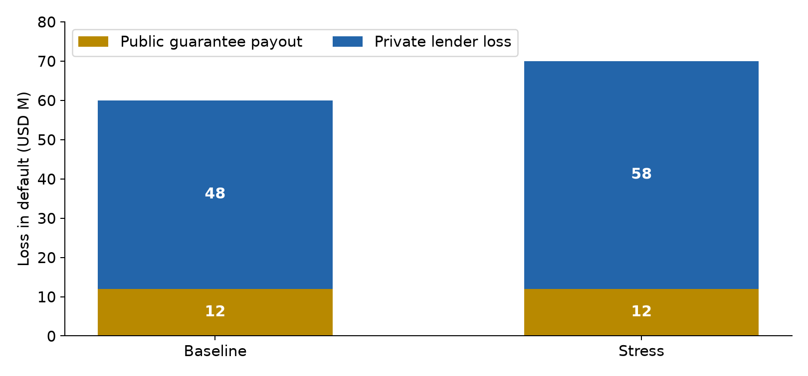
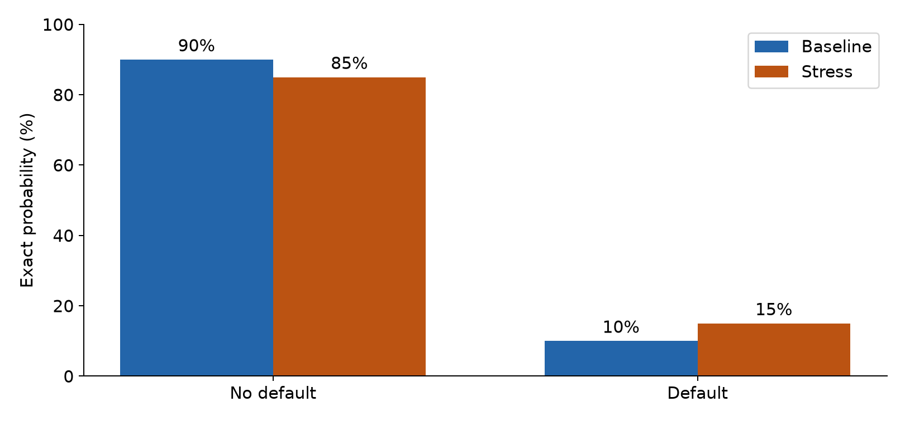

Week 12 blended finance student explanation
FINA3020 · Read this explanation independently of the game. All figures use the labelled example.
Open the student activity · Open the instructor comparison
Understand the financing problem
The project costs USD 100M. Its financing consists of USD 20M sponsor equity and a USD 80M private loan. A separate public budget of USD 20M can fund a first-loss guarantee reserve, an interest subsidy or a preparation grant. “M” means million. All money in the main exercise is USD. Probabilities apply over one illustrative project period; the exercise ignores interest and discounting. Losses are stated as positive amounts.
A guarantee reserve pays the first loan losses, up to its cap. An interest subsidy supports debt service. A preparation grant supports project development. In this model, the subsidy and grant do not change default probability or loan loss. This assumption isolates the guarantee channel; it does not establish that subsidies and grants are ineffective in practice.
The given USD 60M and USD 70M losses are losses on the loan before the external guarantee. They already account for sponsor equity. Do not subtract the sponsor's USD 20M again. The loan principal stays at USD 80M for every feasible allocation.
| Given input | Baseline | Stress |
|---|---|---|
| Loan principal | USD 80M | USD 80M |
| Default probability p | 10% = 0.10 | 15% = 0.15 |
| Loan loss in default D | USD 60M | USD 70M |
| Lender limit x on expected loss | 2% = 0.02 | 2.5% = 0.025 |
| Public support budget | USD 20M | USD 20M |
The probability rises by 5 percentage points, from 10% to 15%. That is a 50% relative increase. Loss in default rises by USD 10M. The lender's limit rises by 0.5 percentage points. These are three separate changes.
Work through the six calculation types
Use the same example throughout: guarantee G = 12M, subsidy S = 5M, grant H = 3M, loan principal L = 80M, baseline probability p = 0.10, default loan loss D = 60M, and lender limit x = 0.02. Keep full precision in calculations. Display money and rates to two decimals. In practice boxes, enter 6 for 6%; a comma or trailing percent sign is accepted. An answer within 0.02 of the stated answer in the requested units is accepted. Losses use a positive sign.
1 Budget use
Question: how much public support have you committed? Add all three uses of the public budget. Budget B = G + S + H = 12 + 5 + 3 = USD 20M. Remaining budget = 20 − 20 = USD 0M. This is separate from project financing. To increase the guarantee without exceeding the budget, reduce subsidy or grant support.
2 Loss in default
Question: who bears the loan loss if default occurs? Public guarantee payout is the smaller of the loan loss and the guarantee. Public payout = min(D, G) = min(60, 12) = USD 12M. Private loss is the remaining loan loss, with a zero floor: max(D − G, 0) = max(60 − 12, 0) = USD 48M. Check that 12 + 48 = 60M. Loss is transferred, not eliminated. Use 48M in the expected private-loss calculation.
3 Expected loss
Question: what is the average loss before the state is known? Multiply each possible loss by its probability and add. No default has probability 90% and zero loss. Expected private loss = 0.90 × 0 + 0.10 × 48 = USD 4.80M. Expected public payout = 0.10 × 12 = USD 1.20M. Check: 4.80 + 1.20 = USD 6M = 0.10 × 60.
The USD 12M reserve is a funded commitment. The USD 1.20M expected payout is a probability-weighted loss. In a particular state the public payout is zero or 12M. These numbers do not measure an interest return, a market price or a volatility. Next, express expected private loss relative to the loan.
4 Expected private loss rate
Question: does the loan meet the lender's expected-loss limit? Divide expected private loss by loan principal, then multiply by 100 to express a percentage. Rate = 100 × 4.80 / 80 = 6.00%. The limit is 2.00%, so the lender declines. The gap is 4 percentage points. Dividing by the USD 100M project cost would answer a different question; entering 0.06 would give the decimal rate rather than the requested percentage.
For any main-game allocation, rate = 100 × p × max(D − G, 0) / 80. The threshold uses the unrounded result. The same calculation is automated for later choices.
5 Minimum guarantee required
Question: what guarantee would meet the loss limit, holding the loan fixed? Work backwards from the allowed expected dollar loss. Allowed expected loss = xL = 0.02 × 80 = USD 1.60M. Allowed loss in default = 1.60 / 0.10 = USD 16M. Therefore required G = D − xL/p = 60 − 16 = USD 44M. This exceeds the USD 20M budget by USD 24M.
In stress, G required = 70 − (0.025 × 80)/0.15 = USD 56.666666…M. USD 56.67M meets the limit when amounts use two decimals; the budget gap is about USD 36.67M. A rounded minimum must not be rounded below the exact threshold. General formula: G required = max(0, D − xL/p), for positive p. These thresholds lie outside the feasible allocation controls. There is no feasible winning split to find.
6 Actual private capital mobilization
Question: how much private finance is committed per dollar of support? Divide private capital actually committed by public support. In the example the lender declines, so the ratio is 0 / 20 = 0 times. If the USD 80M loan closed, the ratio would be 80 / 20 = 4 times. Total project cost / public support is 100 / 20 = 5 times. These are different ratios. With zero public support, the ratio 0 / 0 is undefined.
A proposed loan is not committed private finance. A mobilization ratio also does not measure environmental additionality or net social benefits. Those require evidence outside this loss model.
Decide and compare fairly
Choose guarantee, subsidy and grant amounts independently for baseline and stress. Each control accepts USD millions, from 0 to 20, with a combined budget at most 20. The page explains an excessive budget and lets you correct it. Investor rejection does not block progression.
First copy baseline choices to stress to isolate the change in the risk assumptions. Then change the stress allocation deliberately. The comparison table evaluates each of your two packages in both scenarios, so you can separate changed policy from changed risk. Return to Decide whenever you want. Restore example allocations resets only the allocation choices, not your practice or reflection.
| Package | G / S / H in USD M | Baseline rate | Stress rate |
|---|---|---|---|
| Example | 12 / 5 / 3 | 6.00% | 10.88% |
| All guarantee | 20 / 0 / 0 | 5.00% | 9.38% |
| All subsidy | 0 / 20 / 0 | 7.50% | 13.13% |
| All grant | 0 / 0 / 20 | 7.50% | 13.13% |
| No support | 0 / 0 / 0 | 7.50% | 13.13% |
| Lender limit | Given input | 2.00% | 2.50% |
The unrounded stress rates for the example, all-guarantee, and zero-guarantee packages are 10.875%, 9.375%, and 13.125%. Comparisons use full precision. All-guarantee minimizes private expected loan loss among the available instruments because only G changes loan loss. Both endpoint rates still exceed the limits, so no feasible package closes the loan. This conclusion concerns the stated model and objective, not a universally best use of climate funds.
Read the figures

The comparison figure has guarantee reserve in USD M on the horizontal axis and expected private loss as a percentage of the USD 80M loan on the vertical axis. Blue circles represent baseline; orange triangles represent stress. Dashed lines mark the respective 2% and 2.5% limits. Large markers identify the example choice; in the game they follow your choices. The vertical scale is 0–14% for both cases. Every whole-million guarantee amount from 0 to 20 is shown. Subsidy and grant splits have no effect on these curves under the fixed-risk assumption. Notice that neither curve reaches its limit. The chart does not establish climate additionality or net public value.

The waterfall has baseline and stress on the horizontal axis and loss in USD M on the vertical axis, fixed from 0 to 80. Gold is public payout; blue is private loss. With the example guarantee, default produces public/private losses of 12/48M in baseline and 12/58M in stress. The stacks sum to 60M and 70M. The game's state selector can show no default, when both losses are zero. It applies that same illustrative state across policies. Selecting a state is not a random draw. These losses are conditional on the loan being funded; the lender declines all feasible packages in the model.

The probability figure has no default and default on the horizontal axis and probability in percent on the vertical axis, from 0 to 100. Blue baseline bars show 90%/10%; orange stress bars show 85%/15%. There is no simulated sample. Probabilities stay fixed when you change support, while the accompanying loss amounts update. The full loss distribution is the pair of probabilities together with the losses below.
| Example scenario and state | Probability | Private loss USD M | Public payout USD M |
|---|---|---|---|
| Baseline no default | 90% | 0 | 0 |
| Baseline default | 10% | 48 | 12 |
| Baseline expected value | Weighted average | 4.80 | 1.20 |
| Stress no default | 85% | 0 | 0 |
| Stress default | 15% | 58 | 12 |
| Stress expected value | Weighted average | 8.70 | 1.80 |
One no-default outcome does not prove that a policy is better. Compare the same probabilities and states across policies, and distinguish conditional losses from their expected values. A single score would hide these distinctions; the game displays budget use, loss rates, protection needed and actual mobilization separately.
Optional extension with internal junior capital
The extension changes the financing structure explicitly. Project cost is USD 100M = J public junior capital + (100 − J) private senior capital. There is no separate sponsor-equity tranche or external guarantee. D is now project loss in default. The loss target is 2% in both baseline and stress.
Expected senior loss rate = 100 × p × max(D − J, 0)/(100 − J). At J = 20, baseline is 100 × 0.10 × 40/80 = 5%, and stress is 100 × 0.15 × 50/80 = 9.375%. The matching numbers at J = 20 do not make the two models interchangeable.
When J is below D, solve p(D − J) ≤ 0.02(100 − J). Thus J ≥ (pD − 2)/(p − 0.02). Baseline: (6 − 2)/(0.10 − 0.02) = USD 50M. At J = 50, senior capital is 50M and expected loss is 0.10 × 10 = 1M, exactly 2%. Stress: (10.5 − 2)/(0.15 − 0.02) = USD 65.384615…M, so at least USD 65.39M at two decimals. Both exceed the original USD 20M budget.
The extension lets J range from 0 to 99 to locate these thresholds. Senior principal must remain positive. Its practice question asks for the baseline rate at J = 50: answer 2%. The hint identifies the changing denominator; the solution substitutes the amounts above. This extension is optional and does not add a participation requirement.
Reflect and submit
Explain your chosen packages using the displayed loss rates and limits. Use the all-guarantee comparison and required guarantee to assess feasibility. Propose one change to investigate before committing public funds. Explain why a no-default outcome would not establish that the policy was better.
The activity records participation after you review six calculation types through a numeric attempt or a solution, choose budget-feasible allocations in both cases, view Compare, and write a reflection. Enter your name, one 10-digit CUHK ID, and section A, B or C. Correct guesses, attracting the lender and favorable outcomes are not requirements. The instructor applies the course's participation rules.
“Saved on this device in this tab” is a local draft, not a server acknowledgement. Session storage supports refresh in this tab; closing the tab can lose the draft. If storage is blocked, keep the page open and download a backup. “Submission in progress” means the server has not yet confirmed. “Submission status uncertain” means that a response may or may not have reached the server. Retry the same submission, using its stable identifier. Do not start another record to resolve uncertainty.
Only “Confirmed by the server” with a receipt and saved time establishes acknowledgement. The existing receiver deduplicates retries. Download or copy this activity's response if you need a private backup for the TA. A backup is not itself a receipt. A saved receipt does not establish that a separate confirmation email was delivered.
After submission, the written response and identity are frozen. You can still change choices and replay the figures. Those experiments do not alter or resubmit the frozen response. The response export contains this activity's own identification, choices, reflection and receipt status; keep it private.